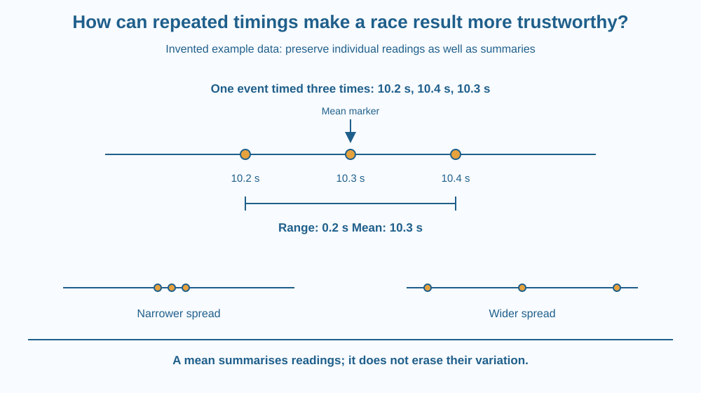

Use repeated manual timings to describe variation in a measured result. Calculate a simple range and mean from example data. Explain why repetition helps reveal random variation without claiming that averaging removes every possible measurement error.
Three friends time the same short practice race. Their stopwatches do not agree exactly. Nobody changed the track length, but fingers started and stopped at slightly different moments. Each reading contains both information about the run and variation from the measuring process.
One student wants to choose the fastest reading because it looks impressive. Another wants to hide the disagreement and publish only an average. A stronger report keeps the individual readings, explains the conditions and uses a summary that does not pretend the variation disappeared.
A measurement connects a physical event with a recorded value. Manual timing includes several decisions: recognising the start signal, pressing the start control, recognising the finish and pressing stop. Human responses can differ slightly each time.
Random variation makes repeated readings spread around rather than agree exactly. A repeat means performing the measurement again under comparable conditions. Repeats help show the size of the spread and reveal whether a single reading is unusual relative to the others.
Consider an invented practice dataset: 10.2 seconds, 10.4 seconds and 10.3 seconds. The range is the largest minus the smallest reading, so it is 0.2 seconds. These numbers illustrate arithmetic; they are not statistics about Indian students or measured results from this activity.
The mean is the total divided by the number of readings. Here the total is 30.9 seconds, and dividing by three gives 10.3 seconds. The mean uses information from all three readings instead of selecting only the one that makes the result look best.
A mean does not erase the original spread. Report that the readings ranged from 10.2 to 10.4 seconds if the variation matters to the comparison. A difference smaller than the observed timing variation may not support a confident claim about which runner is faster.
Repeated timings can refer to different arrangements. Several observers timing the same run mostly compare their measurement processes. One runner completing several runs introduces genuine performance differences as well. Those two datasets should not be interpreted as if they tested exactly the same thing.
Averaging helps with some random effects, but not every error. If a device's clock is consistently wrong, taking more readings does not automatically correct it. That limitation matters, although this lesson focuses on observed variation rather than a full study of calibration and accuracy.
An unusual reading should prompt investigation. Perhaps someone missed the start signal or pressed the wrong control. Do not delete it merely because it is inconvenient. Record the reason for excluding a value, and keep enough information for someone else to understand the decision.
Draw a horizontal time line. Place one dot for each reading, then mark the lowest and highest dots. The span between them shows the range. Put a different symbol at the mean.
The dots are the evidence; the mean is a summary. Keeping both prevents the summary from concealing the size of the disagreement. A cluster of readings tells a different story from widely scattered readings with the same mean.
Now draw two datasets with the same average but different spreads. You do not need advanced statistics to see why those datasets would support different levels of confidence in a tiny difference between results.
The SVG shows three example readings on a number line and a bracket marking their range. A central marker identifies the mean. The same values appear in a separate arithmetic panel.
A second pair of small dot plots shows similar central positions with different spreads. The diagram's job is to connect a numerical summary with the readings that produced it, not to introduce a new physical law.
Every number is labelled as invented example data. The arrows and dots therefore teach reporting and arithmetic without pretending that an experiment or school race actually produced those values.

School sports events often depend on timing. When a close finish matters, start and finish procedures become especially important. Repeating practice measurements can reveal how much a handheld timing method varies before anyone uses it to compare very small differences.
A science class might time the passage of a toy car between marks. Several observers can measure the same trip, keeping the motion identical while comparing their readings. Releasing the car repeatedly instead changes the trial itself and can introduce release variation.
A useful notebook records the method as well as the numbers. Without that context, a table of repeated values may mix different sources of variation and invite the wrong conclusion.
Use a phone stopwatch with permission, paper and a pencil. Remain seated or stand safely; no racing is needed.
If time allows, calculate a mean too. This exercise measures a mixture of your interval estimation and button timing, not the accuracy of the phone clock. Label it honestly so the activity does not claim to isolate one source of variation that it actually combines with another.
Two runners differ by 0.1 seconds in one pair of manual readings, while practice timings of the same event vary by several tenths of a second. What should you say about the strength of the evidence?
Suggest a better measurement arrangement rather than simply declaring the smaller number the winner. Consider a shared recording of the start and finish, while recognising that any new method also needs a clear procedure.
How is the range of repeated readings calculated?
Answer: B — The range measures the span from the smallest to the largest recorded value.
Why keep the individual readings after calculating a mean?
Answer: C — The individual values preserve information about variation hidden by one summary.
The invented times are 10.2, 10.4 and 10.3 seconds. What is their mean?
Answer: A — Their sum is 30.9 seconds; dividing by three gives 10.3 seconds.
Write a short race-timing report using the invented readings 10.2, 10.4 and 10.3 seconds. Include the individual values, their mean and their range, with units.
Explain whether the data alone justify reporting a result to many decimal places. Add a sentence distinguishing several observers timing one run from one observer timing several different runs. That distinction should be visible in the table heading, not hidden in a footnote.
Two collections of readings can have the same mean and very different spreads. One number cannot describe every important feature of a dataset. Repetition adds value when the report preserves the differences it reveals, rather than using an average to make the disagreement invisible.
Repeated timings reveal variation; report the readings and a suitable summary instead of assuming one value or an average is perfectly exact.